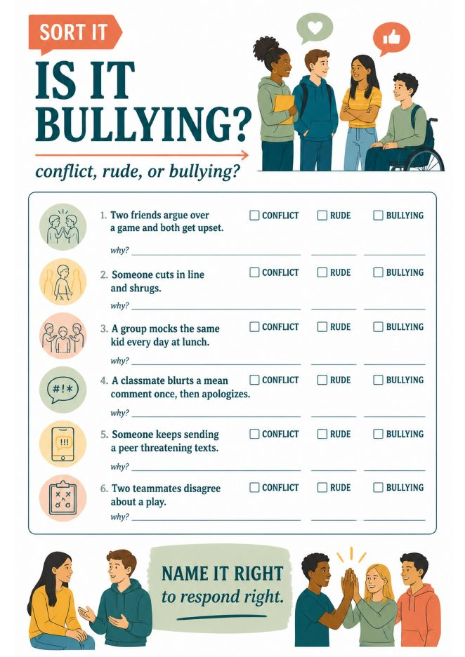
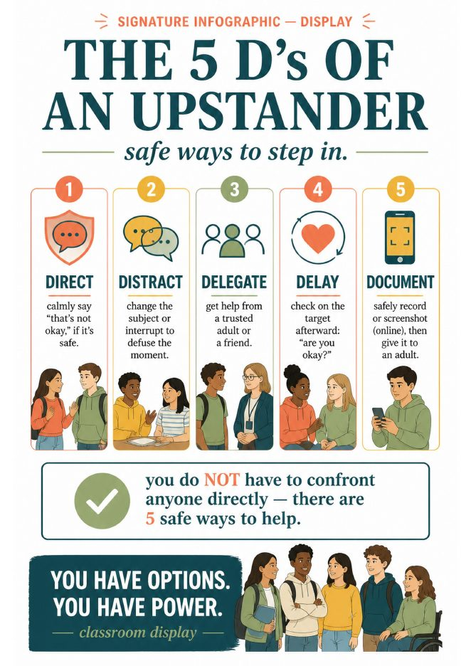

Quirepress
Quirepress
Why students call everything bullying
By sixth grade most students have heard the word bullying hundreds of times. They have also learned that it is the word adults respond to. So a friend who stopped sitting with them, a sarcastic comment in a group chat, a teammate who argued about a play: all of it arrives at your desk as “I’m being bullied.”
This is not a small problem. Elizabeth Englander, who directs the Massachusetts Aggression Reduction Center, and the researchers at the Cyberbullying Research Center have both written that calling every hurtful act bullying dilutes the term and lets students sidestep responsibility for ordinary conflict. The Cyberbullying Research Center puts it plainly: by calling everything bullying, we water down the very real distress that targets of bullying experience.
And the real cases exist. About one in five US students ages 12 to 18 reported being bullied at school in 2021–22, with the highest rates in grades 6 to 8, according to the National Center for Education Statistics. The students who are actually being targeted need the word to still mean something when they finally use it.
The fix is not to tell students to stop saying bullying. It is to give them a tool to decide.
The chart: conflict, rude, or bullying
The three-way split has a history worth crediting. School social worker Signe Whitson popularized “rude, mean, or bullying” in a 2012 Psychology Today piece that is still the handout most districts use. PACER’s National Bullying Prevention Center frames the same question as conflict versus bullying, with the hinge being whether the two people have equal power. Our chart combines the two, because secondary students mostly get stuck on exactly that hinge: “we were both in it” versus “they keep coming after me.”
So the chart has three columns:
- Conflict. A disagreement between people with roughly equal power. Both are upset, both are involved, and both usually want it over. It is normal, and it is a skill to learn, not an offense to report.
- Rude, or mean. A one-time thoughtless or hurtful moment. It stings. It is not a pattern, and there is no power gap.
- Bullying. On purpose. Repeated, or very likely to be repeated. And a power imbalance, which can be size, status, numbers, or online reach, so the person targeted cannot simply make it stop.
That third column is not ours. It is the research definition Dan Olweus established decades ago and the uniform definition the CDC and the Department of Education published in 2014: unwanted aggressive behavior involving an observed or perceived power imbalance, repeated or highly likely to be repeated.
The three tests students can run themselves
Was it on purpose? Not “did it hurt,” which is a different question. Did the person mean to hurt?
Has it happened more than once, or is it clearly going to? The CDC wording matters here. One severe act, a threat, a photo passed around, can count. A single clumsy comment usually does not.
Is there a power imbalance? Could the target make it stop on their own? If the answer is no, because the other person is bigger, older, more popular, or has a group behind them, the third test is met.
Three yeses is bullying. Anything else is conflict or rudeness, which deserve a response, but a different one. Students who run the tests out loud get surprisingly honest. The friend who moved tables fails test one. The group that mocks the same kid at lunch every day passes all three, and now the student has the words to say so.
The 10-minute lesson: project, sort, decide
This runs in advisory, a health class opener, or a counselor push-in. You need the chart on the board and the sorting half-sheet printed, one per pair.
Project the chart. Read the three columns. Ask: “Which column do you think most things that get reported as bullying actually belong in?” Let them guess. Do not answer yet.
Sort six scenarios in pairs. Each pair marks conflict, rude, or bullying and writes one word for why. Push on the why. “It happened twice” and “he’s bigger” are the answers you want to hear.
Decide out loud. Take a show of hands per scenario. Where the room splits, run the three tests together. Exit line: “One thing I used to call bullying that is actually conflict.”
The six scenarios on the printed page, with where most classes land:
The second and fourth scenarios are the useful arguments. Some students want “mean” to be bullying because it hurt. That is the moment to say that hurt is real and still not the test.


It is bullying. Now what? The 5 D’s of an upstander
Naming it correctly is half the lesson. The other half is that most students who witness bullying do nothing, not because they do not care, but because the only option they can picture is confronting the person, which feels unsafe. So they freeze, and silence reads as approval.
The 5 D’s give them five options instead of one. The framework comes from Right To Be’s bystander-intervention training, which built on Green Dot’s original three D’s. In student terms:
- Direct. Say something short, if it is safe. “That’s not okay.” Then stop talking.
- Distract. Change the subject, ask the target a question, drop a book. Break the moment without naming it.
- Delegate. Get an adult, or get a friend to come with you. This is the one most students forget is allowed.
- Delay. Check on the person afterward. “Are you okay?” counts, and it counts a lot.
- Document. Write down or screenshot what happened, with the target’s okay, and hand it to an adult. Never post it.
The point students need to hear: you do not have to confront anyone. There are five safe ways to help, and one of them fits almost any moment. The evidence that it matters is old and clear. In a well-known observational study of playground bullying, Hawkins, Pepler and Craig found that when a peer did step in, the bullying stopped within ten seconds more than half the time. That study was with younger children in Canada, so treat the number as a signal rather than a promise for a high school hallway. The signal is strong enough.
Using this in October
National Bullying Prevention Month was founded by PACER in 2006 and runs all of October. Unity Day, when schools wear orange, falls on October 21 this year. Most schools mark the month with a spirit week and a poster. That is fine, and it is not a lesson.
This one is. It fits a single advisory block, it works in health, ELA or a counselor’s classroom visit, and it does not ask teenagers to sit through another talk about kindness. It asks them to decide.

Bullying Prevention Unit: Be an Upstander
Grades 6–12 · 37 pages · the chart as a classroom display · the sorting page · 5 D’s practice · scenario cards · “Reporting isn’t tattling” · Upstander Pledge · quiz with key · family guide · $11.95
Questions counselors ask
What is the difference between conflict and bullying?
Conflict is a disagreement between people with roughly equal power. Both are involved and both usually want it resolved. Bullying is on purpose, repeated or likely to be repeated, and involves a power imbalance, so the target cannot make it stop alone. Rudeness is a one-time thoughtless act. Run the three tests. Only three yeses is bullying.
Can a single incident be bullying?
Usually not, and students should hear that. But the CDC definition covers behavior that is highly likely to be repeated, so one severe act, a threat or a photo shared around, can meet the bar. Teach students to report once and let adults judge the pattern.
What do I say to a parent who insists it is bullying when it is a conflict?
Walk the three tests with them, with their child’s own account. Parents accept “this is a conflict and here is how we are helping your child handle it” far better than “this is not bullying.” The first sentence has a plan in it.
- Whitson, S. (2012). “Is It Rude, Is It Mean, Or Is It Bullying?” Psychology Today. The origin of the rude, mean, bullying distinction.
- PACER’s National Bullying Prevention Center. “Conflict vs. Bullying: What’s the Difference?” and the National Bullying Prevention Month pages.
- StopBullying.gov (2014). The uniform definition of bullying developed by the CDC, the Department of Education and HRSA.
- Olweus, D. The research definition of bullying: intentional, repeated, power imbalance.
- National Center for Education Statistics (2024). Student Bullying, Condition of Education. School year 2021–22.
- Hawkins, D. L., Pepler, D. J., & Craig, W. M. (2001). “Naturalistic observations of peer interventions in bullying.” Social Development, 10(4), 512–527.
- Right To Be. Bystander-intervention training, the 5 D’s, building on Green Dot’s three D’s.
- Englander, E. (2016–17). “Understanding Bullying Behavior.” American Educator. Cyberbullying Research Center, “Distinguishing Bullying from Other Hurtful Behaviors.”